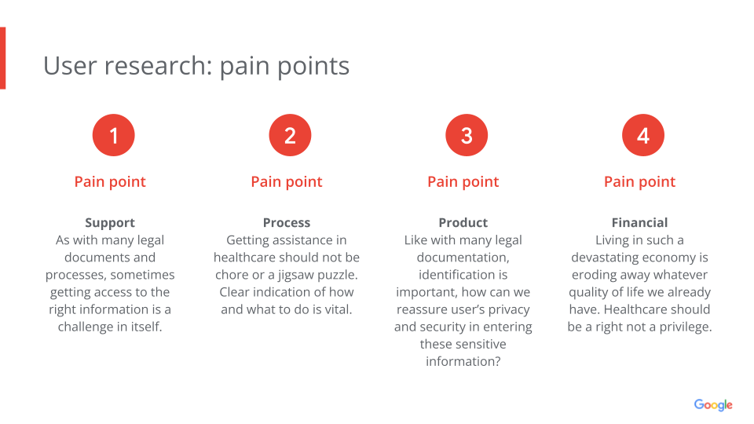
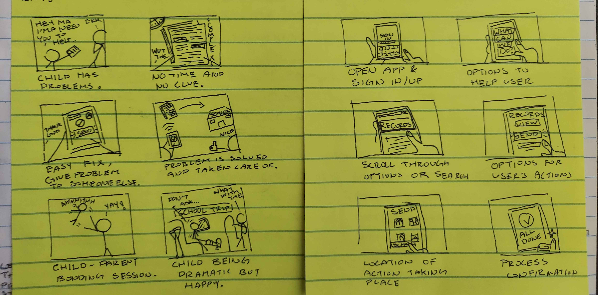
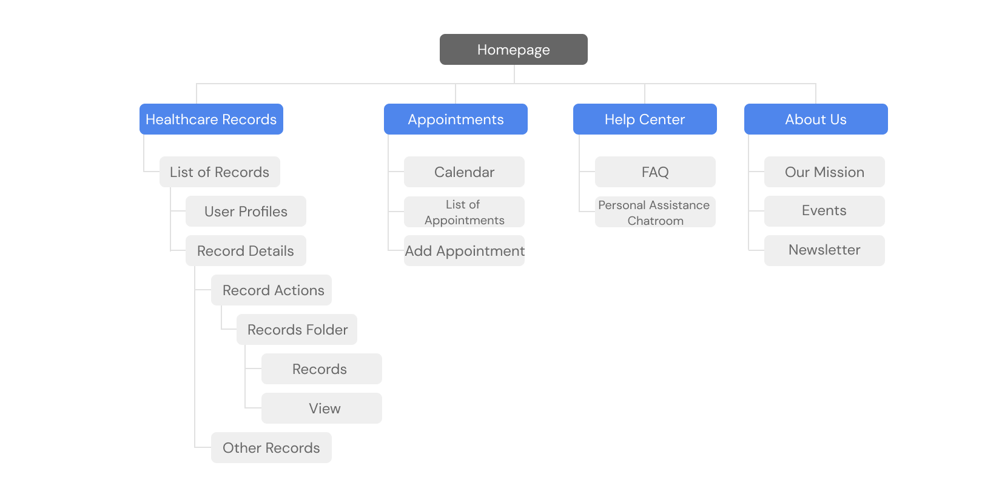

UX Designer
ToolFigma, Google Doc, Google Slide
DurationJune 2024 to July 2024 - 3 Weeks
Problem
Many are easily overwhelmed by the the complexity and importance of dealing with healthcare matters. Even with the available assistance applications out today, most bombard you with cryptic information without providing the necessary support for each individual's need.
The Goal
Assisting many who balances a cluttered workload by offering a reliable method of managing their healthcare records and visits.
After some foundational research, I utilized Google's provided persona examples to find specific personas and altered them such that they would work in my case study. From there, to compensate for the limited participants for personal interviews, I synthized the secondary research and my competitive audit's reviews to create potential user pain points.
A summary of my competitive audit can be found here.
Pain Points
User Personas
Storyboards
The method I chose to ideating potential solutions was by creating big-picture and close-up storyboards which allowed me to not only empathize more with my users but also easily share with potential stakeholders what my approach is for this problem.
Paper Wireframes
From the storyboards I started progressing towards developing paper wireframes while prioritizing quantity over quality.
Information Architecture for Responsive Webpage
For the Responsive Webpage, I built a sitemap to help organize the layout for the app which saved time in the future design and development process.
Digital Wireframes
By applying the Gestalt principles into the designs, it becomes easier to recognize which elements are grouped with one another and makes it easier for the future engineering team to imagine how they would function.
During the low-fi prototyping phase I focused more on the connection between screens which helped quickly helped reveal some issues early on in the design process.
Low-Fidelity for Dedicated Mobile App
Low-Fidelity for Responsive Webpage
I've written an usability study moderated interview script and recorded the characteristics a participant should have in a cohesive google doc, among other factors that played into the creation of this project including KPI's and project goals. You can view the full research study plans here.
After conducting the usability study, I synthized my findings into actionable insights and prioritized them based on how negatively they impact the users'
flow.
Mockups
After revising my previous designs to address these issues, I could begin planning out color, font, and style for the mockups. To do this, I created a sticker sheet that illustrated the brand's identity and designed main compononets to easily refer back to when needed.
The final product of this project is a clickable high-fidelity prototype hosted through Figma's prototype feature.
The next steps I would take in this project would be to iterate some more on the designs until I’m satisfied with each possible user flow.
After several more usability test studies and finalizing design details and more, I would potentially look into seeing if this is a viably publishable app.
Overall, I've learned so much from this project, having the Google's UX Design Certificate Courses guide me through each step of the process.
What I would've like to have done differently however, is to rely less on the secondary research and google's offered examples in my personas and other
parts of my research and delve more into a real community that would be willing to participate in my usability studies and interviews. I believe their
insights could have exponentially improved my designs, thus reinvigorating my drive for this project.